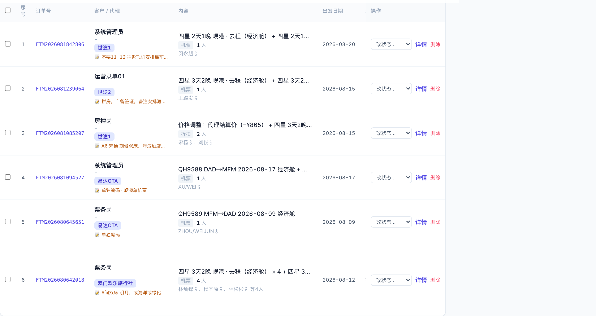
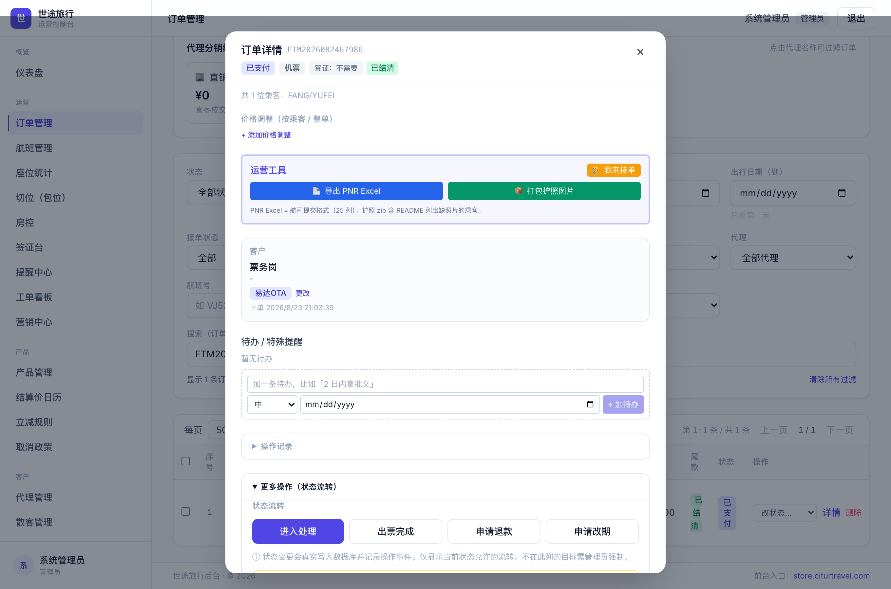
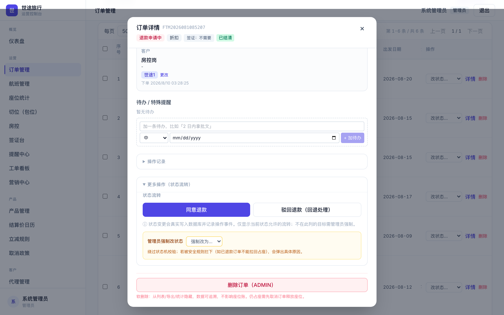
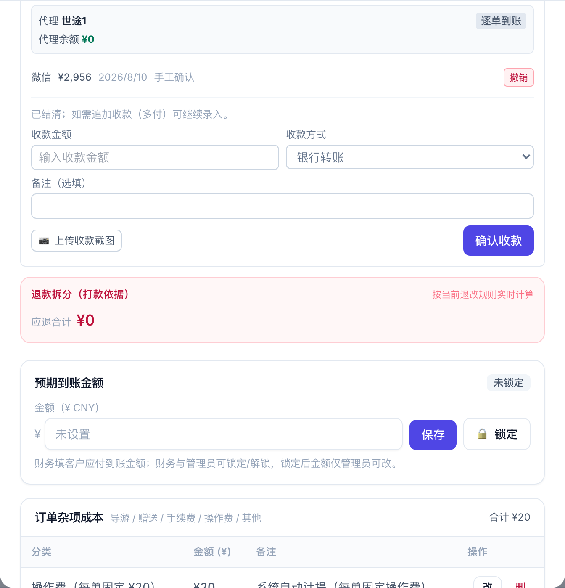
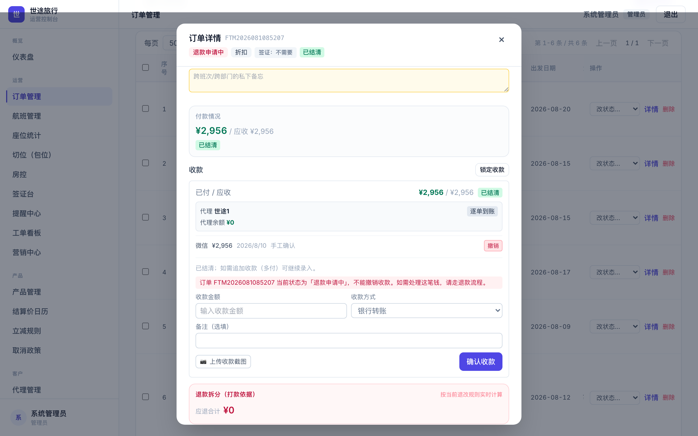
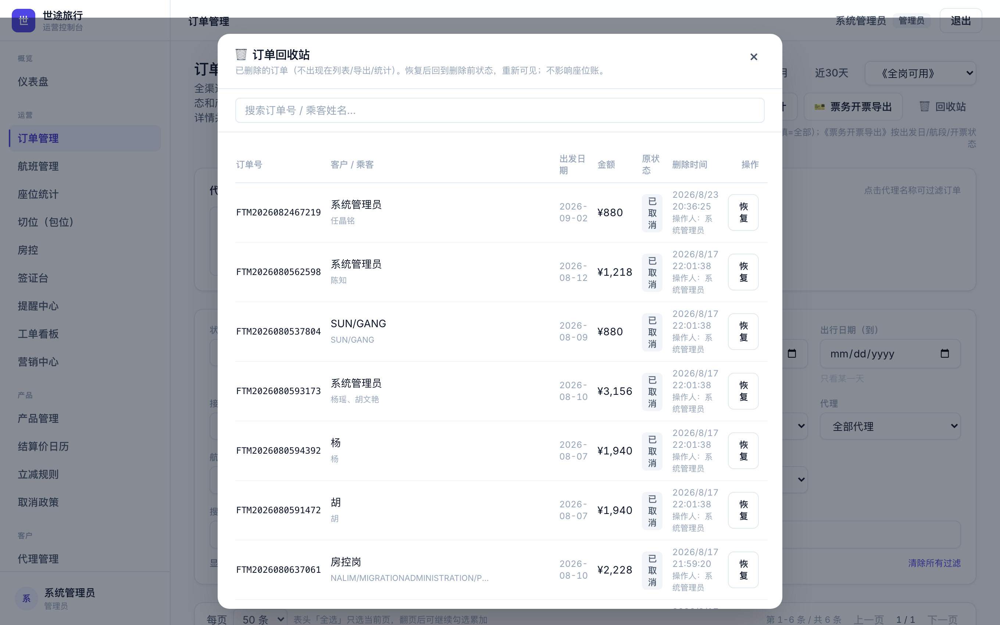
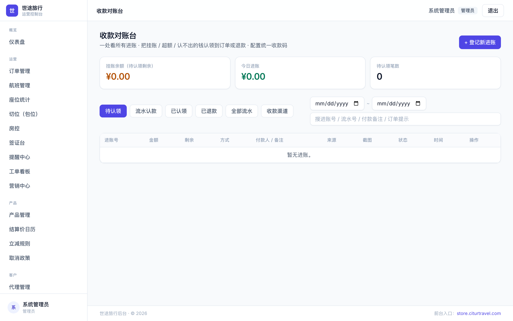

适用读者：财务岗 / 运营岗 / 系统管理员 · 覆盖：退款申请中订单的处理、驳回、批准，以及卡在退款流程的订单如何清理删除 · 截图与报错均取自系统实际界面
删除订单有两条硬规则（详见第六章）：机位必须已释放（退款申请中的单机位已释放，这条它是过的），以及净收款必须为零（已收 − 已退 ≤ 0）。卡住删不掉的，几乎都是卡在第二条——单上还挂着已收款。按下面三种情形选路径：
| 你的情形 | 处理路径 | 需要的角色 |
|---|---|---|
| ① 这张单「已付」本来就是 ¥0 | 不用改任何状态，直接点「删除」即可。 | 仅管理员 |
| ② 收过钱，钱确实要退给客人 | 走完退款流程（见第四章）：核对「退款拆分」→ 线下打款 → 点「同意退款」→ 订单变「已退款」→ 若全额退平即可删除。 若这张单没有退款申请记录（历史卡单，详情里有黄色提示）：先「驳回退款（回退处理）」，再点「申请退款」重新发起报价。如果扣了退改费（公司留存了一部分钱），这张单删不掉也不该删——它是真实营收记录。 |
同意退款：运营/管理员 删除：仅管理员 |
| ③ 「已付」有金额，但钱其实没到账 录单时误点了确认收款 / 重复录入 / 测试单 |
管理员快捷路径（推荐，不动座位）： 订单详情「更多操作」→ 强制改状态为「已取消」→ 收款区「撤销」该笔收款（填原因）→ 已付归零 → 点「删除」。 常规路径（无强制权限时）： 「驳回退款（回退处理）」→ 处理中（⚠️ 机位会重新占回）→ 收款区撤销收款 → 改「出票失败」→「已取消」→ 请管理员删除。 |
撤销收款：运营/管理员 强制改状态、删除：仅管理员 |
核心一句话：「退款申请中」= 机位已释放、钱还没退；「已退款」= 钱账两清、不可逆。
| 环节 | 谁来做 | 系统里发生了什么 |
|---|---|---|
| 发起退款申请 | 客户在前台自助申请，或运营在后台改状态 | 订单转「退款申请中」，机位/房量立即释放回库存（客人不再占位，但钱还挂在单上） |
| 核对与打款 | 财务 | 看订单详情「退款拆分」卡确定实际要打的现金金额，在银行/微信人工转账。系统不会自动打款，它只记账。 |
| 同意退款 | 财务 / 运营 | 订单转「已退款」：退款记录标完成、该单佣金按实退比例自动冲销、代理余额抵扣的部分自动退回代理余额账户 |
| 驳回退款 | 财务 / 运营 | 订单回「处理中」：退款申请标记拒绝、机位房量重新占回（余位不足会被拦下并提示） |
两条路看起来结果一样，但差别很关键：有没有生成「应退报价」（退款申请记录）。这直接决定后面「同意退款」能不能批得动。
| 进入方式 | 系统行为 | 后果 |
|---|---|---|
| 路 A：客户/代理在前台自助「申请取消」 | 系统按取消政策自动计算应退金额与退改费，生成一条退款申请记录（含报价快照），订单转「退款申请中」 | ✅ 有应退报价，「同意退款」可正常批准 |
| 路 B：后台点「申请退款」 订单详情「更多操作」按钮，或列表行改状态下拉（2026-08-23 版起） |
与前台同一流程：先弹出实时应退报价确认（应退合计/退改费），确认后生成退款申请记录，订单转「退款申请中」 | ✅ 有应退报价，「同意退款」可正常批准 |
| 路 C：例外通道 批量改状态、管理员强制改状态、出票失败单改退款态，以及旧版改出来的历史单 |
只改状态、释放机位，不生成退款申请记录，也没有应退金额 | ⚠️ 之后点「同意退款」会被拦（第五章报错 1） |
订单管理列表用状态筛选「退款申请中」可以一眼看到所有待处理退款的单；每行有「改状态」下拉、「详情」和「删除」。

订单管理 → 状态筛「退款申请中」。行内「改状态」下拉可直接流转；点「详情」进订单弹窗
点开「详情」，拉到下方展开「更多操作（状态流转）」——退款相关的动作按钮都在这里。已支付/处理中等状态下有「申请退款」（发起退款申请，弹实时应退报价确认）；退款申请中状态下有「同意退款」「驳回退款（回退处理）」；管理员还有「强制改状态」和最底部的「删除订单」。

已支付的单 →「更多操作（状态流转）」里的「申请退款」：点击后弹出实时应退报价（应退合计/退改费）确认，确认即生成退款申请并释放机位

退款申请中的单 → 同一位置变为「同意退款」「驳回退款（回退处理）」；黄色区「管理员强制改状态」仅管理员可见；最底部红色「删除订单（ADMIN）」

订单详情下方：收款记录（每笔可「撤销」）＋「退款拆分（打款依据）」卡（按当前退改规则实时计算；本例没有退款申请记录，故应退显示 ¥0）
为什么拦：这张单是没经过报价直接进的「退款申请中」（第三章的路 C，多为旧版改状态改出来的历史单），系统里没有应退报价。如果放行，钱会永久挂在单上。
怎么处理：钱确实要退 → 先「驳回退款（回退处理）」回到处理中，再点「申请退款」重新发起——会按取消政策生成应退报价，之后正常批准。钱不用退（测试单/错录）→ 按第一章情形 ③ 清理。系统同时会在这类单的详情里显示黄色提示，照提示走即可。
为什么拦：净收款不为零。删了它，这笔钱就没人追了。
怎么处理：钱真收了 → 完成退款再删；钱没收到 → 撤销收款。注意：撤销收款在「退款申请中」状态下会被报错 3 拦住，要先离开退款态（见第一章情形 ③ 的次序）。

在「退款申请中」的单上点收款记录的「撤销」：收款区出现红色提示「当前状态为「退款申请中」，不能撤销收款。如需处理这笔钱，请走退款流程。」
为什么拦：退款申请上的应退金额是按申请那一刻的已付算的；申请还挂着就把收款撤了，应退金额就算错了。
怎么处理：先「驳回退款（回退处理）」或由管理员强制改「已取消」离开退款态，再撤销收款（需填原因，至少 4 个字，操作留痕可审计）。来自收款对账台认款的收款要去对账台撤销认款，钱会退回挂账池。
删除是「软删除」：订单从所有列表/导出/统计里消失，数据保留可追溯，不影响座位账；管理员可在回收站恢复。
| 规则 | 说明 |
|---|---|
| 1. 机位必须已释放 | 可删状态：草稿 支付超时 出票失败 已取消 退款申请中 已退款。 仍占座的状态（待付款/已付款/处理中/出票完成等）不可删——先取消释放座位。删除本身绝不偷偷动座位账。 |
| 2. 净收款必须为零 | 已收款 − 已完成退款 ≤ 0 才放行，否则弹第五章报错 2。这就是「退款申请中的单删不掉」的真正原因：钱还挂在单上。 |
| 权限 | 删除、回收站恢复、强制改状态：仅系统管理员。改状态、同意/驳回退款、撤销收款：运营/管理员。 |
情形 ①（已付 ¥0）：
情形 ②（真退钱）：
情形 ③（收款是错录）· 管理员快捷路径，不动座位：
情形 ③ · 常规路径（无强制权限）：

订单管理右上角「回收站」：已删订单可按订单号/乘客姓名搜索，点「恢复」回到删除前状态；删除时间与操作人留痕可查

收款对账台：待认领 / 流水认款 / 已认领 / 已退款 / 全部流水。这里的「退款」针对的是进账流水，不是订单
对账台里的「退款」是给没认领到订单的进账用的：比如客户重复付款、多付的钱不认领到任何订单、直接原路退回时，把这笔流水标记为已退款（必须填退款备注，标记后不能再认领）。
它和本手册讲的订单退款是两回事：订单退款走订单状态流转（退款申请中 → 已退款），管的是「这张订单收的钱要退」；对账台退款管的是「这笔进账压根不进订单」。两边同样都只是记账——真正把钱打回去都要在银行/微信人工操作。
订单一进「退款申请中」，机位就没了吗？
是。提交申请那一刻机位/房量立即释放回库存（客人不再占位）。所以驳回退款时系统要重新占座，余位不足会被拦下。
点了「同意退款」还能反悔吗？
不能。「已退款」是终态、不可逆，且会触发佣金冲销和代理余额回补。所以界面在批准前会弹确认框让你再确认一次——打款完成之前不要点。
已退款的订单为什么还是删不掉？
看报错：若提示「尚有已收款未退」，说明这张单退款时扣了退改费、公司留存了一部分钱——净收款不为零。这是真实营收记录，本就不该删；留着它，报表才对得上。
删除后座位、报表会受影响吗？
不会。能删的单机位都已经释放，删除只是让订单从列表/导出/统计里消失，不碰座位账。误删可让管理员去「回收站」恢复。
批量勾选能一次处理多张退款申请吗？
能：订单列表勾选多单 → 批量改状态「同意退款」。但批量不展示逐单拆分，其中用代理余额抵扣过的单会自动回补余额——打款金额务必逐单进详情核对「退款拆分」，不要照应退合计打现金。
核查时间 2026-08-23。六张单情况完全一致：已付满额（单笔人工确认的微信收款，非对账台认款）、没有退款申请记录——即都是「后台改状态」进的退款申请中（第三章路 B）。
| 订单号 | 代理 | 金额=已付 | 收款日期 | 核查结果 |
|---|---|---|---|---|
| FTM2026080642018 | 澳门欢乐旅行社 | ¥20,496 | 2026/8/6 | 已付满额（人工确认·微信） 无退款申请记录 →「同意退款」会弹报错 1 →「删除」会弹报错 2 |
| FTM2026080645651 | 易达OTA | ¥880 | 2026/8/6 | |
| FTM2026081085207 | 世途1 | ¥2,956 | 2026/8/10 | |
| FTM2026081094527 | 易达OTA | ¥990 | 2026/8/10 | |
| FTM2026081239064 | 世途2 | ¥1,478 | 2026/8/12 | |
| FTM2026081842806 | 世途1 | ¥1,458 | 2026/8/18 |
处置建议（先由财务确认这六笔微信收款是否真实到账）：
世途旅行 · 运营控制台操作指引 · 2026-08-23 版（含「申请退款」生成应退报价的新流程）· 截图与报错原文取自系统实际界面 · 如与系统最新提示不一致，以系统提示为准